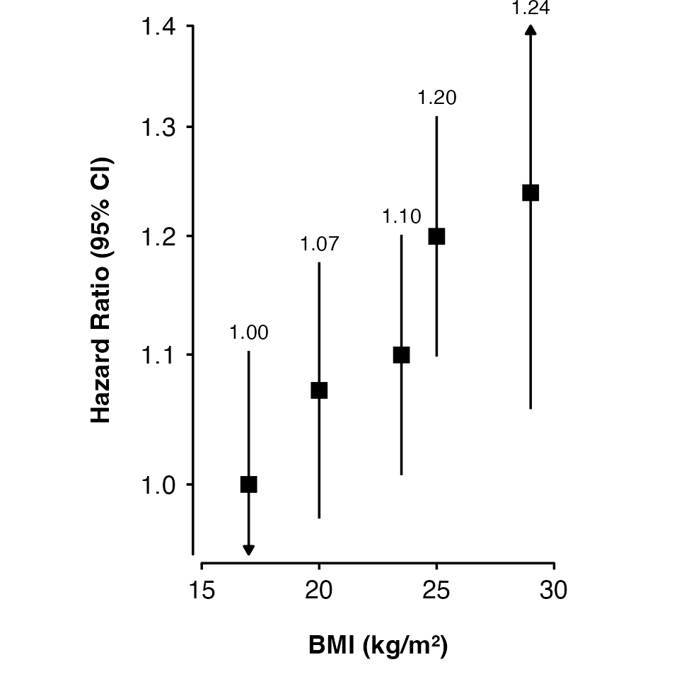
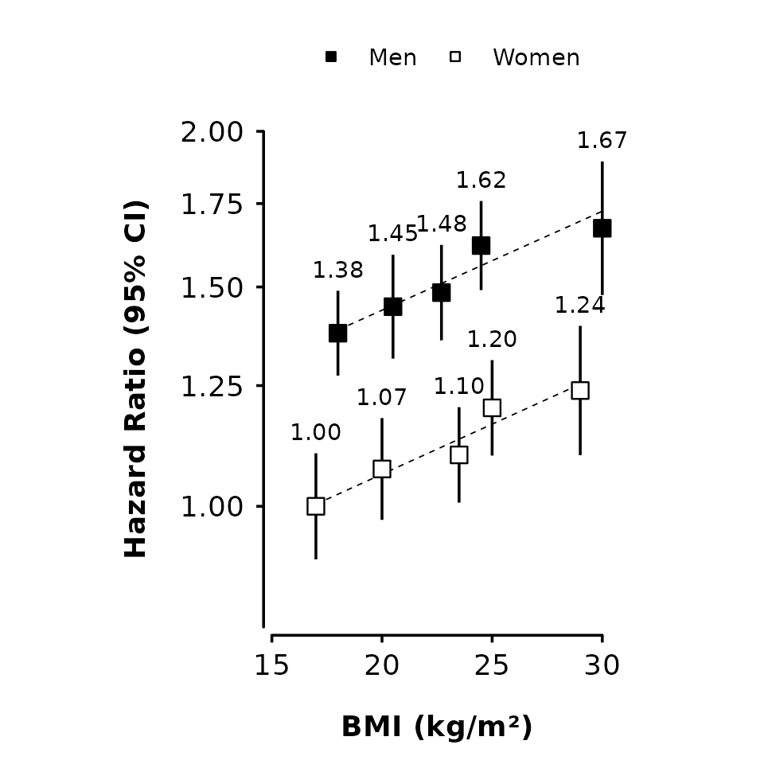
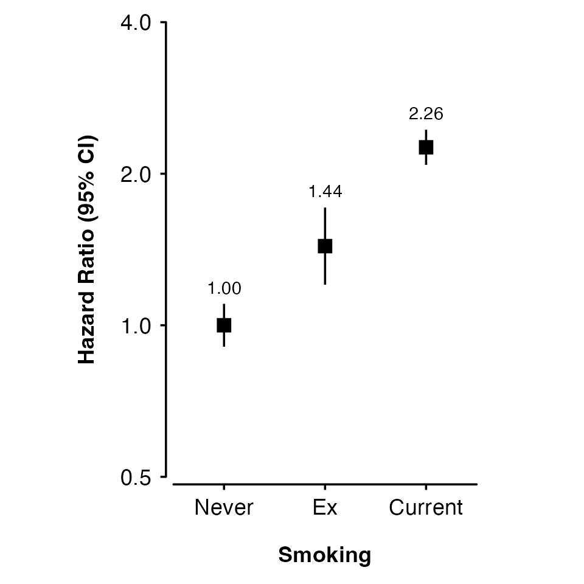
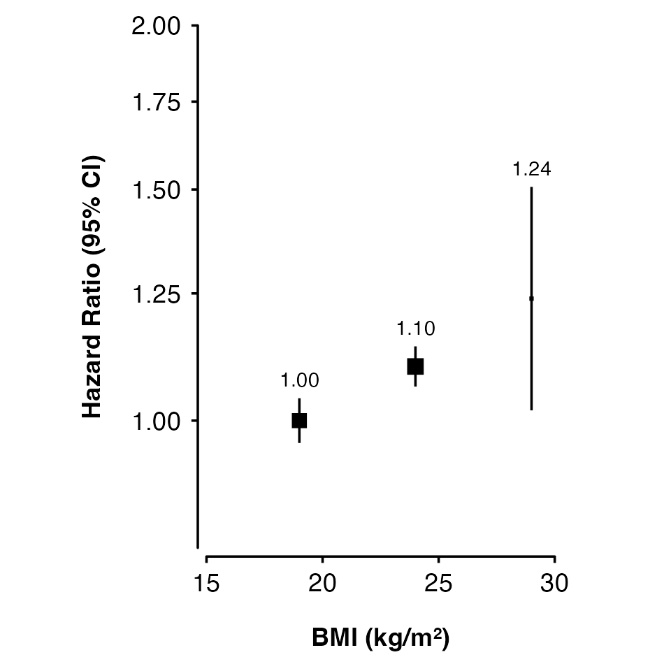

Introduction
The shape_plot() function creates a plot of estimates
and confidence intervals using the ggplot2 graphics package. The
function returns both a plot and the ggplot2 code used to create the
plot. In RStudio, the code used to create the plot will be shown in the
Viewer pane (see [Plot code example] for an example).
Basic usage
Supply a data frame of estimates and standard errors to the
shape_plot() function, and specify the column that contains
x-axis values and axis limits.
my_results <- data.frame(
risk_factor = c( 17, 20, 23.5, 25, 29),
est = c( 0, 0.069, 0.095, 0.182, 0.214),
se = c(0.05, 0.048, 0.045, 0.045, 0.081)
)
shape_plot(my_results,
col.x = "risk_factor",
xlims = c(15, 30),
ylims = c(-0.25, 0.5))If your estimates and standard errors are on the log scale (e.g. log
hazard ratios), then set exponentiate to true. This will
plot exp(estimates) and use a log scale for the axis.
shape_plot(my_results,
col.x = "risk_factor",
xlims = c(15, 30),
ylims = c(0.8, 1.6),
exponentiate = TRUE)Set axis titles using xlab and ylab.
shape_plot(my_results,
col.x = "risk_factor",
xlims = c(15, 30),
ylims = c(0.8, 1.6),
exponentiate = TRUE,
xlab = "BMI (kg/m\u00B2)",
ylab = "Hazard Ratio (95% CI)")Using groups
Use col.group to plot results for different groups
(using shades of grey for the fill colour).
my_results <- data.frame(
risk_factor = c(17, 20, 23.5, 25, 29,
18, 20.5, 22.7, 24.5, 30),
est = c(0, 0.069, 0.095, 0.182, 0.214,
0.32, 0.369, 0.395, 0.482, 0.514),
se = c(0.05, 0.048, 0.045, 0.045, 0.061,
0.04, 0.049, 0.045, 0.042, 0.063),
group = factor(rep(c("Women", "Men"), each = 5))
)
shape_plot(my_results,
col.x = "risk_factor",
xlims = c(15, 30),
ylims = c(0.8, 2),
exponentiate = TRUE,
xlab = "BMI (kg/m\u00B2)",
ylab = "Hazard Ratio (95% CI)",
col.group = "group",
ciunder = TRUE)
Adding lines
Use lines to add lines (linear fit through estimates on
plotted scale, weighted by inverse variance) for each group.
shape_plot(my_results,
col.x = "risk_factor",
xlims = c(15, 30),
ylims = c(0.8, 2),
exponentiate = TRUE,
xlab = "BMI (kg/m\u00B2)",
ylab = "Hazard Ratio (95% CI)",
col.group = "group",
ciunder = TRUE,
lines = TRUE)
Categorical risk factor
The risk factor can be a factor. In this case, the x-axis coordinates are 1, 2, 3, .. so suitable x-axis limits are 0.5 and number of categories plus 0.5. You may need to add position arguments so that points, intervals and text do not overlap.
smoking_results <- data.frame(
smk_cat = factor(c("Never", "Ex", "Current"),
levels = c("Never", "Ex", "Current")),
est = c(0, 0.362, 0.814),
se = c(0.05, 0.09, 0.041)
)
shape_plot(smoking_results,
col.x = "smk_cat",
xlims = c(0.5, 3.5),
ylims = c(0.5, 4),
ybreaks = c(0.5, 1, 2, 4),
xlab = "Smoking",
ylab = "Hazard Ratio (95% CI)",
exponentiate = TRUE)Scaling point size
Set scalepoints = TRUE to have point size (area)
proportional to the inverse of the variance (SE2) of the
estimate.
my_results <- data.frame(
risk_factor = c(19, 24, 29),
est = c(0, 0.095, 0.214),
se = c(0.02, 0.018, 0.1)
)
shape_plot(my_results,
col.x = "risk_factor",
xlims = c(15, 30),
ylims = c(0.8, 2),
exponentiate = TRUE,
xlab = "BMI (kg/m\u00B2)",
ylab = "Hazard Ratio (95% CI)",
scalepoints = TRUE)
To have consistent scaling across plots, set minse to the
same value (it must be smaller than the smallest SE). This will ensure
the same size scaling is used across the plots.
Confidence intervals
Narrow confidence interval lines can be hidden by points. Set the
height argument to change the appearance of short
confidence interval lines. The function will by default try to change
the colour and plotting order of confidence intervals so that they are
not hidden. You can also supply vectors and lists to the
cicolour argument to have more control.
Note that the calculations for identifying narrow confidence intervals has has been designed to work for shapes 15/‘square’ (the default) and 22/‘square filled’, and for symmetric confidence intervals. These may not be completely accurate in all scenarios, so check your final output carefully.
my_results <- data.frame(
risk_factor = c(19, 24, 29),
est = c(0, 0.095, 0.214),
se = c(0.02, 0.018, 0.1)
)
shape_plot(my_results,
col.x = "risk_factor",
xlims = c(15, 30),
ylims = c(0.8, 2),
exponentiate = TRUE,
xlab = "BMI (kg/m\u00B2)",
ylab = "Hazard Ratio (95% CI)",
scalepoints = TRUE,
pointsize = 6,
height = unit(5, "cm"))
Customisation
See Customising plots for more ways to customise shape plots.
Notes
Stroke
The stroke argument sets the stroke aesthetic for
plotted shapes. See https://ggplot2.tidyverse.org/articles/ggplot2-specs.html
for more details. The stroke size adds to total size of a shape, so
unless stroke = 0 the scaling of size by inverse variance
will be slightly inaccurate (but there are probably more important
things to worry about).